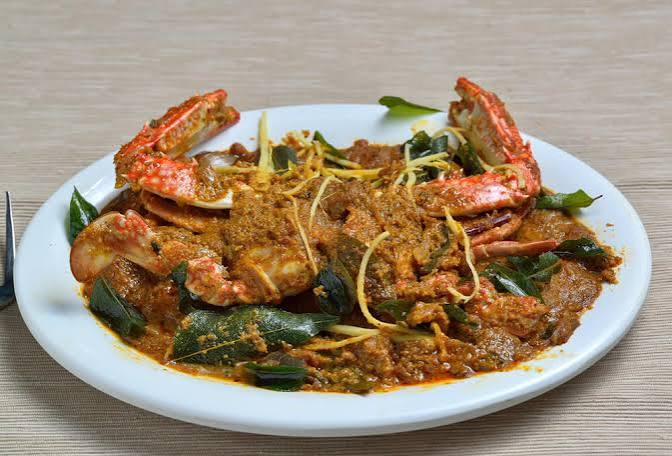

Spicy Chettinadu Crab Masala

Ingredients
- Fresh sea carb - 500grams
- Mustard oil - 5 tablespoon
- Onion - 4 nos
- Tomato - 4 nos
- Garlic - 7-10 cloves
- Ginger - 30 gram
- Green chilie - 5-6 nos
- Cloves - 2 nos
- Cinnamon stick - 2 nos
- Fennel seed - 2 teaspoon
- Mustard seed - 1/2 teaspoon
- Turmeric powder - 1/4 teaspoon
- Chilli powder - 1 teaspoon
- Salt - required amount 😌🫴🏻
- Peppercorn - 1 and 1/2 teaspoon
- Coconut - 1/2 shell
- Coriander leaves
- Curry leaves
(Note : This recipe is passed down directly from the
private collection of a certified culinary artist )
Recipe
- Get a big pan , pour 3 tablespoon of mustard oil , add roughly chopped 3 onions and 3 tomatoes and add curry leaves ,
saute em well till the tomatoes get soft.
- Now add ginger garlic
and chillies saute em till the raw smell of ginger , garlic and chilli, grind all these in a paste and mix the cleaned crabs and add turmeric powder , just give a soft mix and rest it for 20 mins .
- Now take another blender , no problem if you use the one which you used for grinding the paste 😌 add the coconut , 1 teaspoon fennel seeds and the peppercorns by then take a another pan
and the rest of the mustard oil into the pan.
- Add a teaspoon funnel seeds , clove and cinnamon add finely chopped 1 Onion and 1 Tomato saute it well
till they become golden brown.
- Now add chilli powder, put the crab marinated with the paste 😌 add only some amount of water as we want it as a masala , now add required salt 🧂 make it boil until all
our crabs trun red ♥️.
- (NOTE : Don't close the lid cause we want the water to vapour up to thicken the masala.)
- Now add our pepper coconut paste and boil it not more than 2 mins for garnishing add freshly chopped coriander leaves and now you got the perfect crab masala that would make you sweat like
you have gone for a heavy workout.
- Chef tip :
Serve it with hot rice 🍚 on Sunday afternoon with a lots of lovee ♥️.